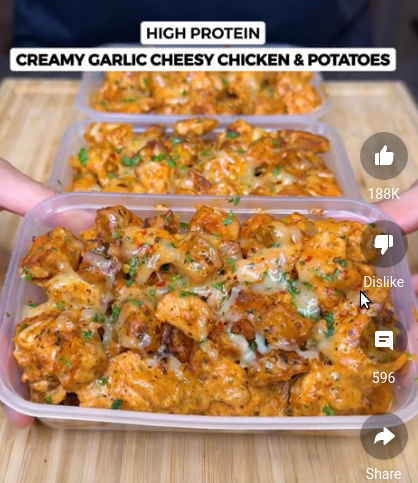

The MOST DELICIOUS High Protein Creamy Garlic Cheesy Chicken & Potatoes

Description
This might just be the best chicken recipe ive made! Creamy Garlic Parm Chicken with Cheesy Potatoes all in one pan perfect for weight loss!
Ingredients:
Creamy Garlic Chicken
- 800g Cubed Chicken Breast
- 3-4 Garlic Cloves Minced
- 2 tsp Onion Powder
- 2 tsp Mixed Herbs
- 1 tsp Chilli Flakes
- 2 tsp Paprika
- 1 tsp Salt
- 2 tsp Olive Oil
Crispy Potatoes
- 1 tsp Salt, Garlic Powder, Mixed Herbs, Chilli Flakes, Paprika
- Optional Olive Oil or Cooking Spray
Steps:
- Oven Bake Potatoes for 20-23 mins at 200C
- Cook the chicken for 5-6 mins, then make sure you lower the heat before adding the milk and cream cheese
- Mix the cream cheese till it melts and becomes smooth and creamy.
- Add the potatoes in, mix till combined then add cheese, cover for 4-5 mins till the cheese is melted
- SERVE & ENJOY!